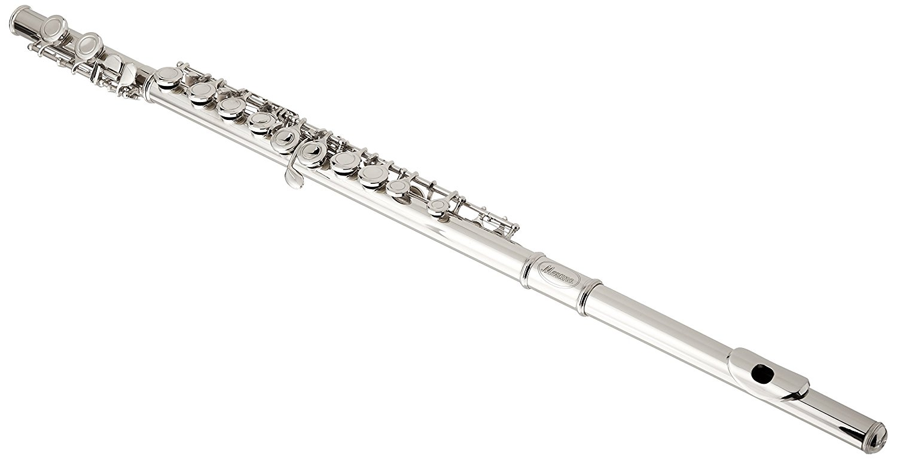
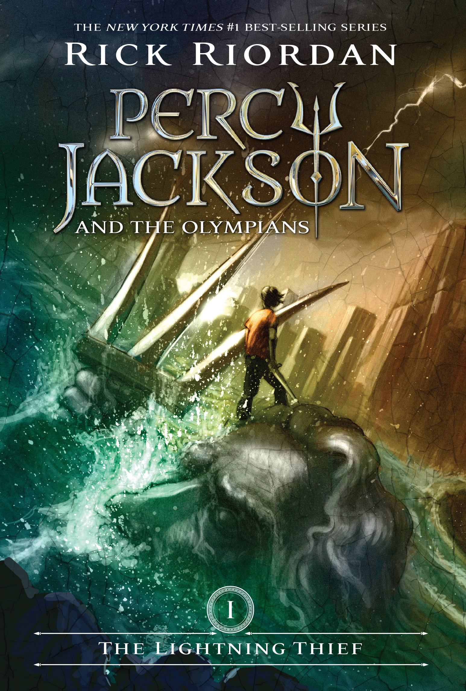

1. Playing the Flute ~ Playing the flute makes me forget about everything that is going on in my life. It allows me to get lost in my music not worry about the outside world. I have been playing the flute for five years and I have been in the marching band for 2 years. I know that sometimes playing the flute becomes a difficult task, but playing the flute has allowed me to overcome my challeges.
3. Riding a bike ~ As a non-active person I feel that riding a bike is the best way to exercise. This is because I get to sit down on a bike ad just have to pedal. When I ride my bike I reach locations quicker than by walking or running. I also get to bike with my friends and family easily.
2. Reading Books ~ Sometimes I want to escape the world and the only way I can do that is through the magic of books. Books put me in a kind of trance that I neve want to get out of. I like reading books that are based off of real life situations. I started reading chapter books when I was in 3rd grade and the first series I read was Judy Moody. My faorite book series out of all the books I have read is the Percy Jackson series. I also like the Hero's of Olympus equally a much.
